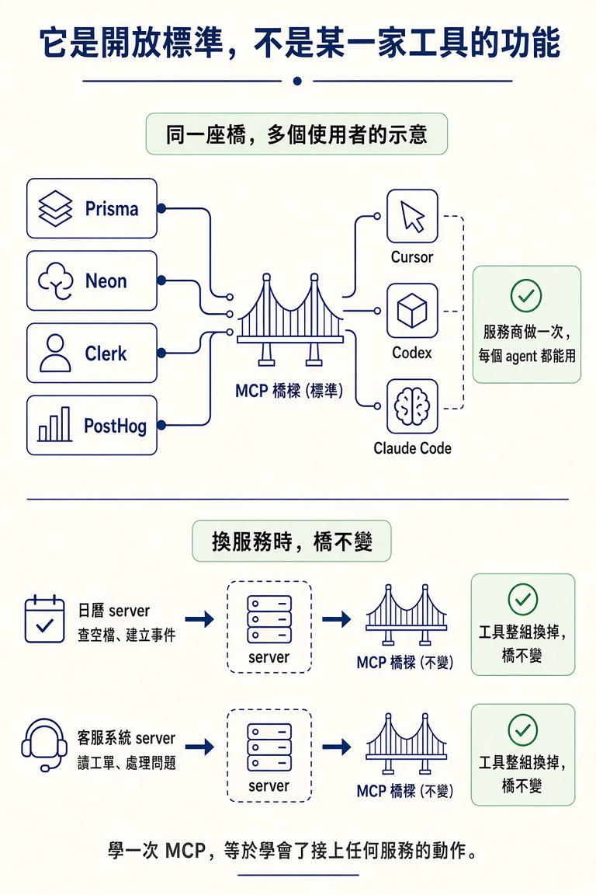
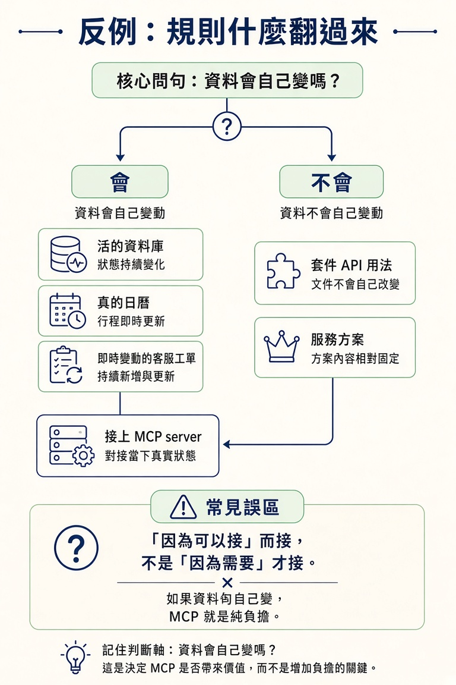

用一句話說清楚 MCP 是什麼、為什麼它是開放標準而不是某一家工具的功能，並且在「這個 MCP server 該不該接」上，能自己做出判斷。
上一節講完 tools，你大概已經察覺到一個破口：工具再厲害，摸到的都是「你專案裡」的東西。讀檔、改檔、搜尋、跑指令，全部發生在 repo 的圍牆內。
但一個 app 真正依賴的東西，多半在圍牆外面。資料庫不在 repo 裡，日曆不在，客服系統不在，那些第三方 API 也都不在。agent 要怎麼碰到它們？總不能靠你在對話裡手打幾筆資料，它也不可能自己連上服務去查。
這一節要做的決定就藏在這裡：要不要給 agent 開一條通往外部服務的線？開下去，它就真的能碰到你的資料庫；但每開一條線，你也同時交出去一份真實的權限，並且多養一個會壞的東西。先把 MCP 是什麼講清楚，再給你一把判斷該不該接的尺。
MCP（Model Context Protocol）的定義短到可以一行講完：
一個服務自己做好一個 server，你的 agent 連上去，接著這個服務能做的每一件事，都變成 agent 可以呼叫的工具。備份你的資料庫，就變成一次 tool call，形狀和讀一個檔案一模一樣。
把它接回上一節的工具概念，你就懂它為什麼存在了。工具是 agent 的手，但這雙手只能在 repo 裡動；MCP 做的事，就是把「某個外部服務」翻譯成 agent 認得的一組工具。連上之後，agent 不需要學什麼新機制，它只是在呼叫更多工具，只是這些工具的另一端，通向真實世界。
實際接一個有多簡單？以 Prisma Postgres 為例，打開終端機，貼上連線指令就好：
claude mcp add --transport http prisma https://mcp.prisma.io/mcp
按 enter，一個 HTTP MCP server 就加好了。/mcp 則是在第一次使用時拿來登入授權用的。課程裡的示範就是這樣接上 Prisma，然後對 agent 說一句「幫我把資料庫塞一些逼真的範例資料，但先備份」。agent 就自己去看 workspace、發現有兩個資料庫、讀 schema、寫好 seed script，甚至幫你新建一個 Prisma 專案、把它的 ID 寫進 .env。它辦得到這一切，靠的全是你剛剛那條線給的權限。
agent 拿到這條線之後，面對的其實是真實服務背後的程式碼。以課程的 Prisma demo 為例，那個 app 用來連資料庫的 client 長這樣：
import { PrismaClient } from "../app/generated/prisma/client";
import { PrismaPg } from "@prisma/adapter-pg";
const adapter = new PrismaPg({
connectionString: process.env.DATABASE_URL!,
});
const globalForPrisma = global as unknown as { prisma: PrismaClient };
const prisma =
globalForPrisma.prisma ||
new PrismaClient({
adapter,
});
if (process.env.NODE_ENV !== "production") globalForPrisma.prisma = prisma;
export default prisma;
這份檔案不是 MCP 幫你生成的，也不是你要背的東西。它只是要讓你看到一件事：MCP 接過去的那一端，是活著的服務，連著真的資料。後面每一條判斷，都會繞著「真實」這兩個字打轉。
這裡有個容易誤會的地方：MCP 不是 Claude 的專屬功能，它是一個開放標準。意思是 Cursor、Codex、Claude Code 可以全部連上同一個 server，服務商做一次，每個 agent 都能用。這也是為什麼 Prisma、Neon、Clerk、PostHog 這些服務商都願意推出自己的 MCP server：做一次，就同時服務了所有用它的人。
「標準」的性質也讓它很好懂。換一個服務，裡面的工具就整組換掉：日曆 server 幫你查空檔、建立事件，客服系統的 server 幫你讀工單。但橋本身一模一樣。學一次 MCP，等於學會了接上任何服務的動作。

現在回到真正的問題。接一個 MCP server 不是免費的。每接一個，就是多一個會壞的東西；而它交到 agent 手上的，是真實、活跳跳的連線：你的資料庫、你的帳號，看你把它插到哪裡。那是真的力量，也帶著真的風險。Prisma 自己的 server 就是例子：除非你先確認，它不會讓 agent 執行「清空資料庫」這種破壞性指令。之所以有這道閘，正是因為這種權限一旦出事，代價很大。
所以別把 MCP 當成「看到就接」的東西。先把兩條路並排來看：
| 不接 MCP server | 接上 MCP server | |
|---|---|---|
| agent 能碰的 | 只有 repo 裡的東西，外面的資料得你手動貼進對話 | 直接對接真實的外部服務，讀得到、也改得到 |
| 資料新不新 | 你貼進來的那一刻就開始過期，服務後來怎麼變它都不知道 | 永遠是當下的狀態 |
| 代價 | 你得花力氣手動搬資料 | 多一個會壞的依賴，也多一份真實權限的風險 |
接著，用一個問句問自己就好：
這個任務，需要一個「活的、會自己變」的外部服務資料，而且是我沒辦法直接複製貼進對話裡的嗎？
值得接的典型：一個活的資料庫、一個真的日曆、即時變動的客服工單狀態，任何會自己改變的東西。這類資料的特性是，你貼一份進來，它下一刻就過期了，靠手動搬運根本不可能維持正確。
如果答案是「不需要」，那就別接。假設你想問某個套件的 API 怎麼用、某個服務有哪些方案，這些是靜態的，或者貼一次文件就解決了。接一條線對 agent 毫無幫助，只是讓你多一個會壞的依賴、多一份要操心的權限，什麼都換不到。
這就是這個決定最常翻車的地方：很多人是「因為可以接」而接，不是「因為需要」才接。判斷翻轉的界線很清楚：資料會自己變嗎？如果不會，MCP 就是純負擔。

MCP 是把外部服務接成 agent 可呼叫工具的標準橋樑：服務做一次 server，任何 agent 都能連。它是開放標準，不是某一家工具的功能，所以換服務就換工具、橋不變。但接一條線不是免費的：它多一個會壞的依賴，也交給 agent 一份真實權限。判斷的尺只有一句：這個任務需要「活的、會自己變、又無法手動貼上」的外部資料嗎？需要就接；靜態或貼一下就有的，就別接。
決定「要接」之後，還有第二個決定在等著：這個 server 該放在哪裡？是每個專案都看得到，還是只綁在某一個專案裡？下一節處理這個位置問題，並把安全與 context 這兩筆帳一次算清。